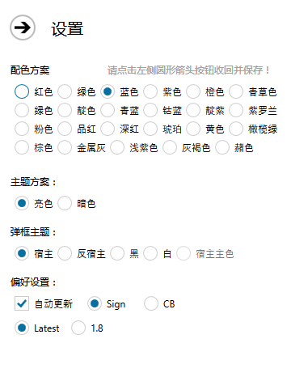

关于界面……没啥好解释的啦_(:3」∠)_
想要看的去软件里看啦

主界面的设置项目预览图在此。
配色、主题方案、弹框主题需要点击左上“→”标志按钮来进行保存和实时应用。
偏好设置则自动保存，但并不是能直接关闭程序来进行保存哦！
自动更新为软件刚开的时候会检查更新，如果您的网络状况不允许则可以关闭，或将\settings\config.ini里CheckingUpdate的值改为false即可。
Sign/CB则是当用户生成的指令拥有彩色字符时，需要进行修复所采用的指令格式，Sign则是获取告示牌，直接点击告示牌来执行指令；CB则是点击告示牌来修改CB内的指令，再次执行CB才会执行用户所需要的彩色指令。两者皆可以用Ctrl+鼠标中键（默认拾取方块按键）来获取带NBT标签的方块哟~
Latest/1.8为Minecraft版本号选择，Latest为最新版本号，此处数量应会根据MC的版本变化来进行变化。另：此处版本变化并未支持完全，仅针对几个窗口功能实现版本变化指令。